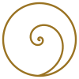

About this library
The work so far
An open, unfinished study — offered in the hope that human hands make it better.
The Recursive Tarot is the work so far of one solo developer — PlayfulProcess — who is passionate about the tarot and about the wider family of meaning-making systems, and who built this library with a great deal of help from AI. It is published in the open, deliberately unfinished, because the hope is simple: that real human collaborators — historians, readers, artists, translators, scholars — will come and make the whole thing better.
I am a student of these cards and traditions, not an authority on them. The historical notes are a careful first pass, kept close to the documentary record (Dummett's spine), but they will contain mistakes — and those mistakes are mine alone.
Where I cite the Tarot History Forum or other scholarship, I cite them only as sources I learned from — never as reviewers who vouch for this catalogue. They are not responsible for my errors. If you know better than I do, corrections are genuinely welcome — here's how to contribute.
One branch of a larger tree
This site is a branch of recursive.eco — an open platform built on grammars: symbolic systems you make meaning with, made by people, not algorithms. A tarot deck is one such grammar. This library is what a single grammar looks like when it grows all the way out: its history, its scholarship, its per-card research.